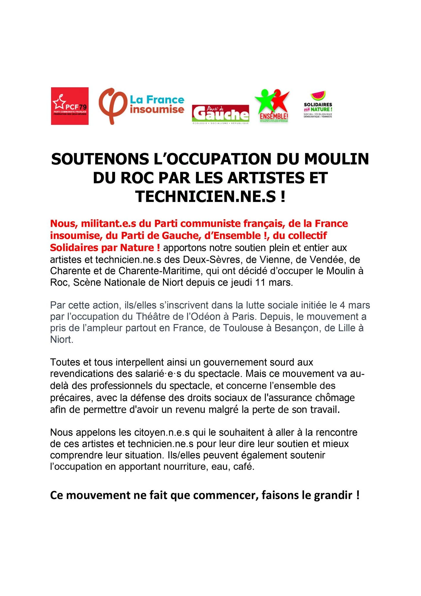

Publication fédérale
À Niort, les artistes et techniciens veulent vivre de leurs métiers
Date indiquée par Facebook · 11 mars 2021
Repères éditoriaux
Nous avons apporté notre soutien aux artistes et techniciens qui occupaient la scène nationale du Moulin du Roc. Le compte rendu de notre rencontre avec les occupants prolonge ce soutien.
Texte conservé avec la publication
Soutien aux artistes et technicien.ne.s qui occupent la scène nationale du Moulin du Roc. Ils veulent vivre de leurs métiers.

Sources
Archive rouge · export Facebook · AR-0002-FB-02057
À lire aussi · Au Moulin du Roc, notre soutien aux artistes et techniciens en lutte